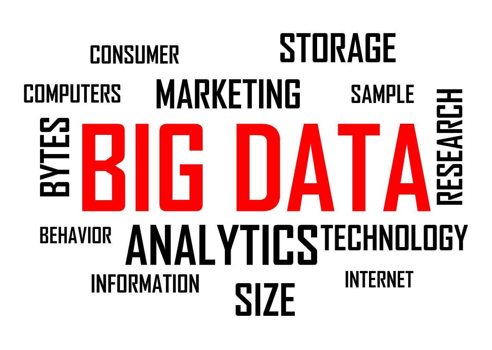

Hello! My name is Xu Zijian, and I am a dedicated Computer Science student currently pursuing my Bachelor's degree. I have a passion for data science, predictive analytics, and big data, and I aim to apply my knowledge in real-world problem-solving. My academic journey will culminate in 2026, and I look forward to exploring more advanced concepts in computing and data science.
I am particularly interested in big data analytics and predictive models. These technologies allow organizations to harness vast amounts of data and generate insights that drive decision-making. I also have a keen interest in data visualization techniques, which help make complex data more comprehensible and accessible to stakeholders across different industries.
Here are some of the projects I have worked on that showcase my skills in web development, server-side programming, and data-driven applications: